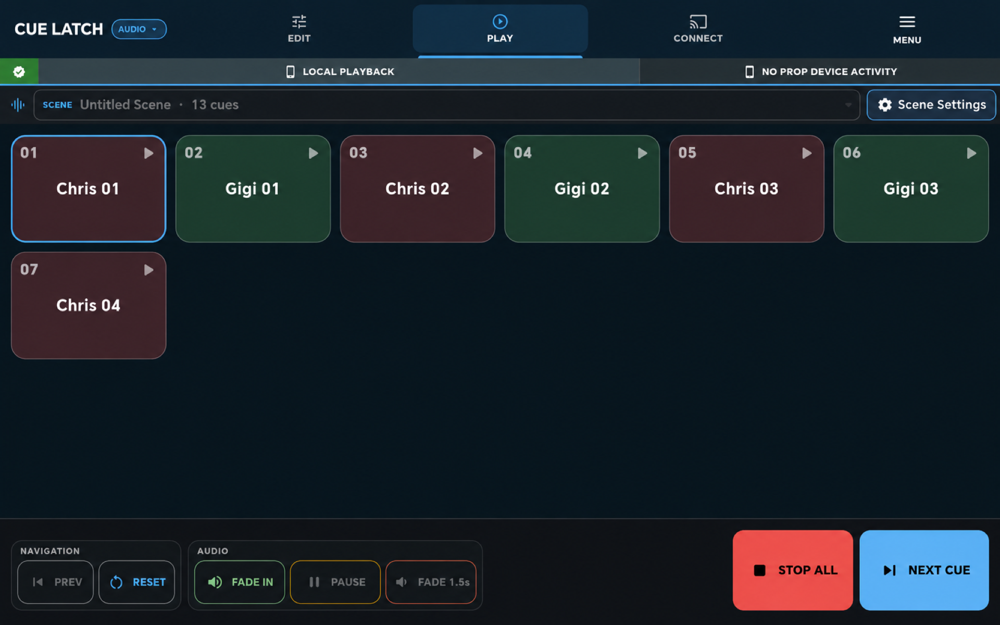
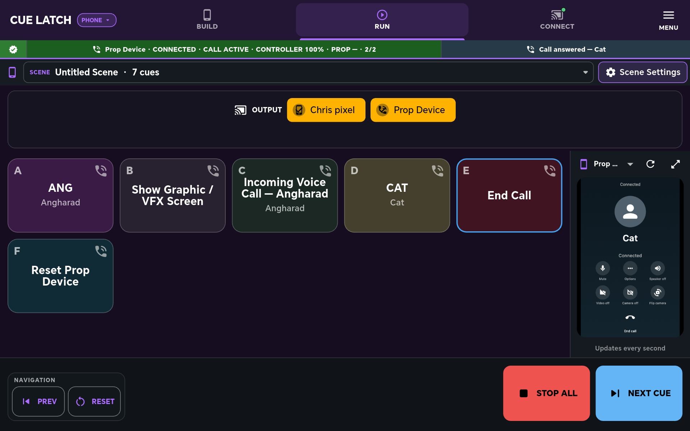
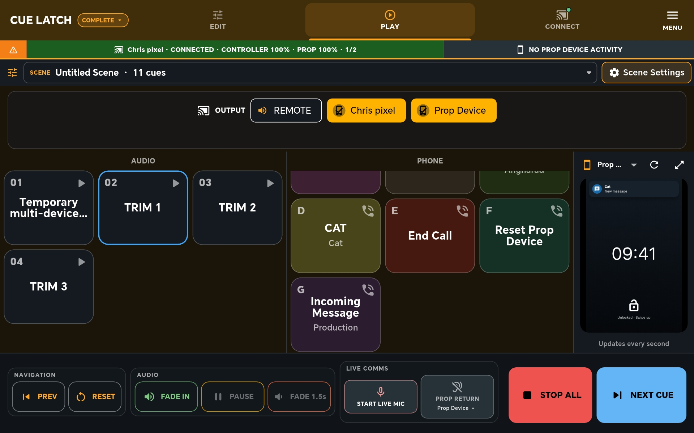
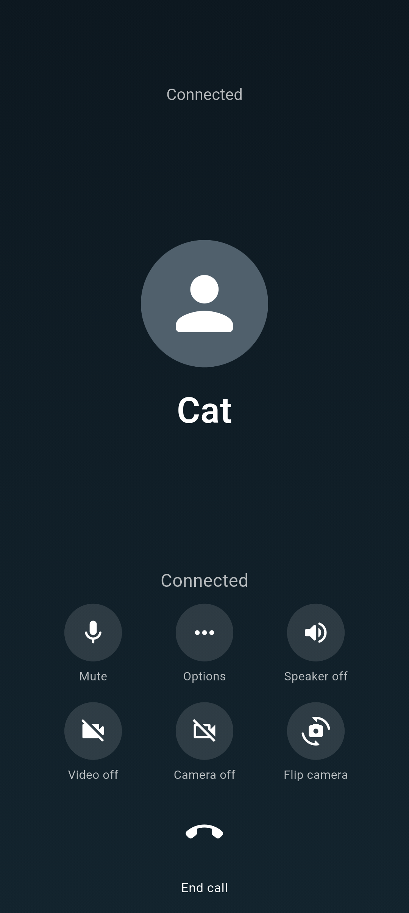
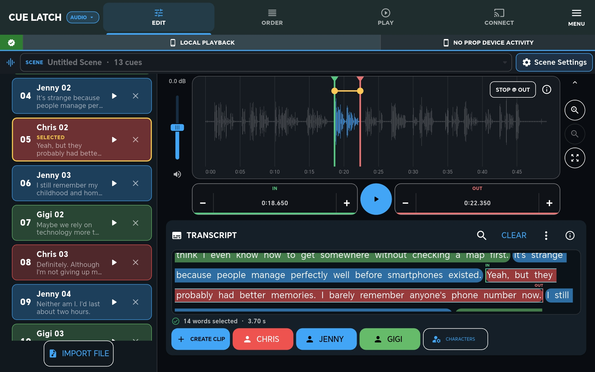
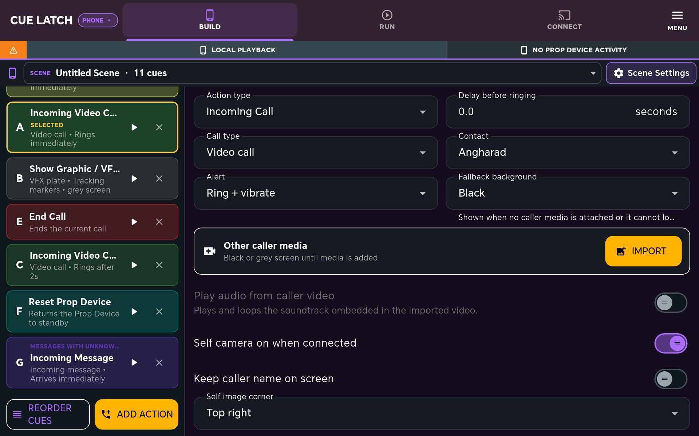
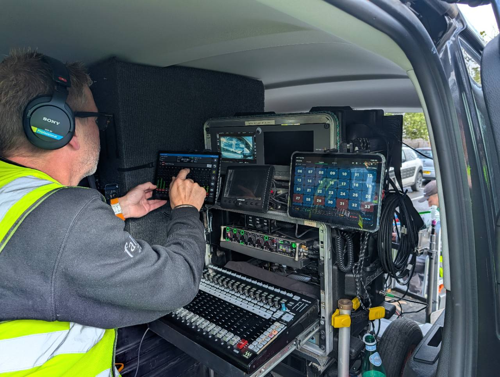

Built for the needs of the scene
Play the cue.
Control the prop.
Choose the focused mode you need, or bring audio and prop-phone action together in Complete mode.
One project / three modes
Choose how the scene runs.
Each controller mode has a clear job. They can work independently or together, with cues routed to the connected prop handset when the scene calls for it.

Sound onlyAudioPrepare and play ordered audio cues locally or through the handset earpiece.
Screen and graphicsPropTrigger calls, messages, graphics and believable phone-screen action.
Audio and prop togetherCompleteRun both cue types from one ordered playback screen.
Action on the screen.
01 / AUDIO
Audio cue playback.
Cut cues from a recording, put them in scene order and trigger them when needed. Playback can stay on the controller or be sent through the connected prop handset’s earpiece.

02 / PROPS
Prop screen control.
Build the phone action, arrange it with the rest of the scene and trigger it from off camera. The operator sees the live prop screen while the actor handles a convincing handset.


In use on set
A small tool beside the sound cart.
CueLatch running alongside a professional Sound Devices Scorpio-based cart. It is designed as a focused cue and prop-phone tool—not a replacement for the rest of the production sound workflow.
Private testing
Help test CueLatch.
CueLatch is being refined with a small group of production professionals before wider release.